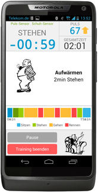
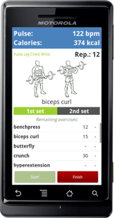
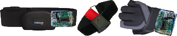

The myHealthAssistant project proposes a middleware for simplifying the development and deployment of body sensor network (BSN) solutions as well as their integration in ambient sensing environments. The middleware handles a variety of sensors and copes with the complexity of heterogeneous and changing sensor constellations; properties of BSNs that become more and more apparent.
Middleware Architecture
Continuing development of an increasing variety of sensors has led to a vast increase in sensor-based telemedicine solutions. A growing range of modular sensors, and the need of having several applications working with those sensors, has led to an extensive increase in efforts for system development. We present an event-driven middleware for on-body and ambient sensor networks that allows multiple applications to define information types of their interest in a publish/subscribe manner. Incoming sensor data is hereby transformed into the desired data representation which lifts the burden of adapting the application with respect to the connected sensors off the developer’s shoulders.
Furthermore, an unsupervised on-the-fly reloading of transformation rules from a remote repository allows the system’s adaptation to future applications and sensors at run-time. Application-specific event channels provide tailor-made information retrieval as well as control over the dissemination of critical information.
Preventive Healthcare Applications
In order to evaluate our middleware, we developed several Android applications built on-top of myHealthAssistant. Two of them target the area of preventive healthcare applications:Reha App
Our rehabilitation application provides monitoring of vital parameters such as blood pressure and weight readings as well as monitoring and instructing interval training for rehabilitation patients. In training mode, patients are supported in their rehabilitation program by several features:
- A simple interface showing all important information such as heart rate, interval count-down, total training time, current exercise, and a progress bar illustrating the training course
- Audio feedback before a new exercise
- Audio feedback if the wrong exercise is performed or the heart rate is too high/low
The activity recognition for detecting a wrong exercise is based on a single customized accelerometer. After the training and upon a blood pressure or weight reading, the training data and sensor readings are transmitted to a telemedicine platform.
Left Bluetooth sensors: heart rate, HedgeHog accelerator, blood pressure, scale. Right screenshot: myReha application showing the interval trainig assistant.
Fitness App
Our fitness diary application utilizes the middleware’s functionality of a seamless sensor configuration handling. In a base setup for daily activity monitoring, a set of a single accelerometer, a smartphone, and a heart rate sensor are used to detect five different activities, monitor the heart rate and calculate the calorie expenditure. In this setup, the system operates for at least 12 hours without battery re-charge. When a person wears additional fitness accessories during a workout a more detailed activity recognition that gives precise workout information is provided. In this gym workout setup, two more accelerometers are added which allow detecting sixteen activities as well as counting of individual weight lifting exercises.

Left: three Bluetooth acceleration sensors integrated to a heart rate sensor, leg strap, and a weightlifting glove. Right screenshot: myFitnessDiary application showing the currently performed exercise including real-time repetition count.
Related Research Projects
References
|
Sensor Network Middleware that Mediates between Sensors and Health Care Applications Christian Seeger, Kristof Van Laerhoven IEEE Life Sciences Newsletter, IEEE, November 2013 [Journal] |
|
A Publish/Subscribe Middleware for Body and Ambient Sensor Networks that Mediates between Sensors and Applications Christian Seeger, Kristof Van Laerhoven, Jens Sauer, Alejandro Buchmann IEEE International Conference on Healthcare Informatics (ICHI 2013), IEEE Press, Philadelphia, PA, 2013 Best Paper Award [PDF] |
|
An Event-based BSN Middleware that supports Seamless Switching between Sensor Configurations Christian Seeger, Alejandro Buchmann, Kristof Van Laerhoven ACM SIGHIT International Health Informatics Symposium (IHI 2012), Miami, Florida, USA, January 2012 [PDF] |
|
Wireless Sensor Networks in the Wild: Three Practical Issues after a Middleware Deployment Christian Seeger, Alejandro Buchmann, Kristof Van Laerhoven The sixth international workshop on Middleware Tools, Services and Run-time Support for Networked Embedded Systems (MidSens 2011), Lisbon, Portugal, ACM, December 2011 [PDF] |
|
myHealthAssistant: A Phone-based Body Sensor Network that Captures the Wearer's Exercises throughout the Day Christian Seeger, Alejandro Buchmann, Kristof Van Laerhoven The 6th International Conference on Body Area Networks (BodyNets), Beijing, China, ISBN 978-1-936968-29-9, ACM, November 2011 Best Paper Award [PDF] |
|
Poster Abstract: Adaptive Gym Exercise Counting for myHealthAssistant Christian Seeger, Alejandro Buchmann, Kristof Van Laerhoven The 6th International Conference on Body Area Networks (BodyNets), Beijing, China, ISBN 978-1-936968-29-9, ACM, November 2011 [PDF] |
Related Theses
|
Entwicklung eines Aktivitätserkennungssystems für Trimm-dich-Pfade für Android-Smartphones (BSc. Thesis) Sebastian Niederhöfer. Technische Universität Darmstadt, 2013 [PDF] |
|
Introducing Application-specific Communication Channels in myHealthAssistant (BSc. Thesis) Jens Sauer. Technische Universität Darmstadt, 2013 [PDF] |
|
Entwurf und Implementierung einer dynamischen Funktionalitätsanpassung von myHealthAssistant (BSc. Thesis) Dassi Ponka. Technische Universität Darmstadt, 2013 |
|
Development of an Activity Recognition System for Fitness Trails (BSc. Thesis) Thomas Pignede. Technische Universität Darmstadt, 2012 [PDF] |